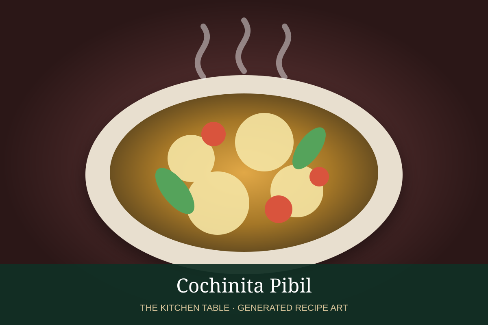

← Back to all recipes
PORK · MEXICAN
Cochinita Pibil
Yucatán pork marinated in achiote and sour orange, wrapped in banana leaves, and slow-roasted until shreddable.
4 hr + marinateServes 8

Photo: Xcaret
Ingredients
- 4 lb pork shoulder
- 4 oz achiote paste
- 1 cup sour orange juice, or 2/3 cup orange + 1/3 cup lime
- 4 garlic cloves
- 1 tsp cumin
- 1 tsp oregano
- 1/4 tsp cloves
- 1 tsp kosher salt
- Banana leaves
- Pickled red onions
- Corn tortillas
Preparation
- Blend achiote, citrus juice, garlic, cumin, oregano, cloves, and salt.
- Cut pork into large chunks, coat with marinade, and refrigerate overnight.
- Line a Dutch oven or roasting pan with softened banana leaves and add pork with marinade.
- Fold leaves over pork, cover tightly, and roast at 325°F for 3 to 4 hours until very tender.
- Shred pork into its juices.
- Serve with pickled red onions, tortillas, and salsa Xni-Pec.